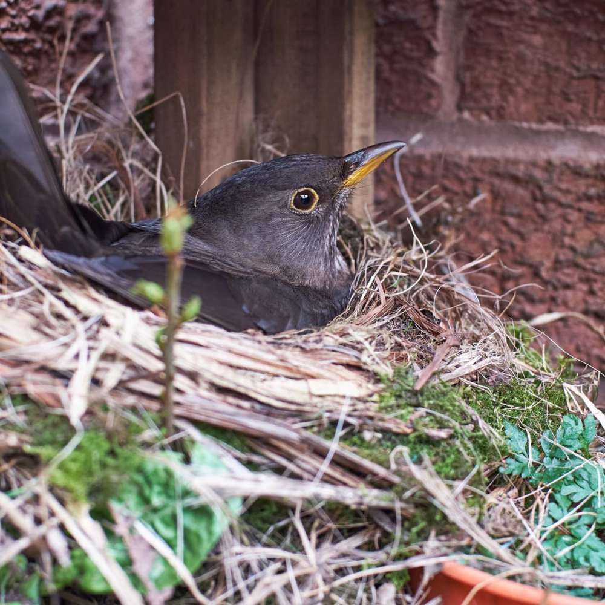
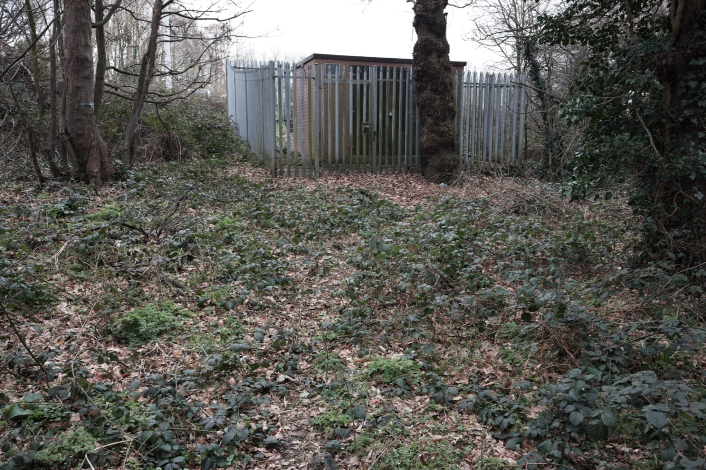
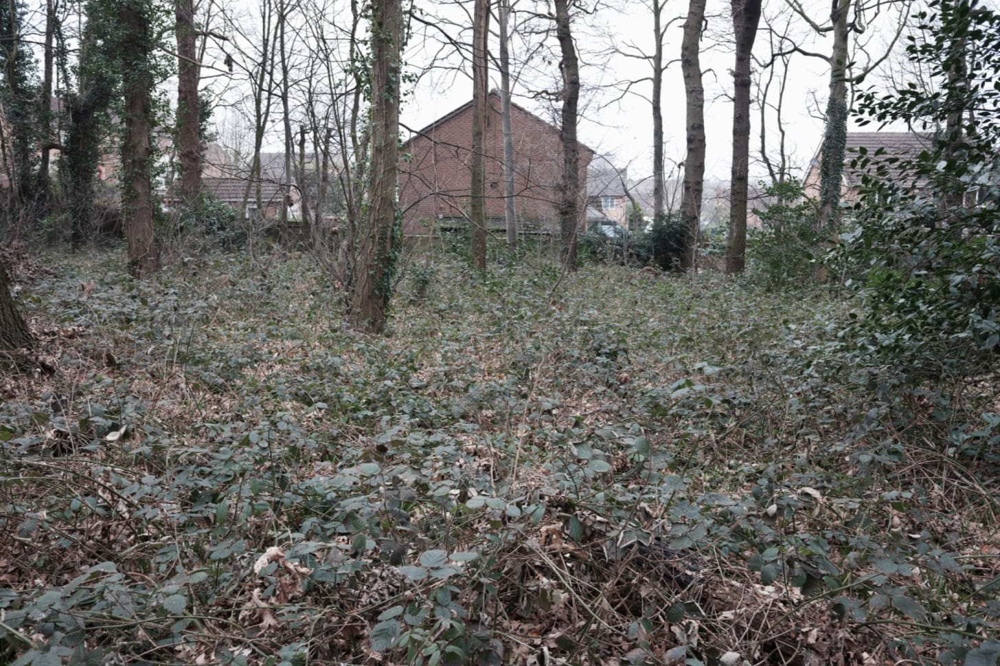
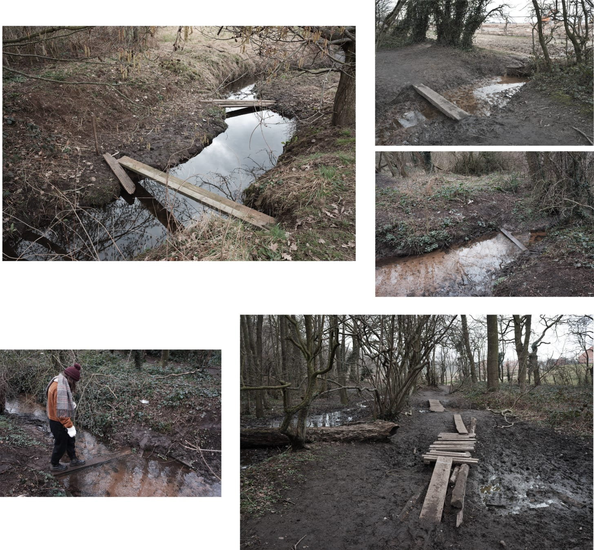
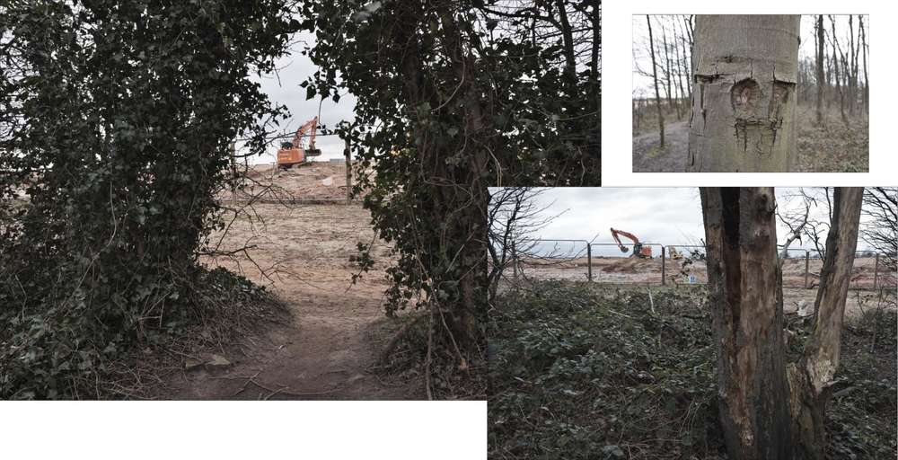
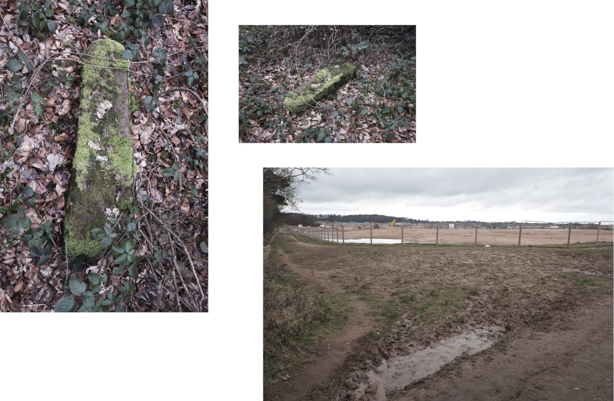

Rich's digital garden
Boundaries
Hello Roadside Picnic subscribers. This week is a photo essay and field notes (consider it as a mini-zine but cheaper and to your inbox).
Blackbirds have made a nest in the garden. On top of some potted Cherry saplings.
{kind=link}
Tired of the edgelands on our part of town, we jump ship and head to another. It's a short walk. We try our best to minimise walking along busy roads -the dog hates them, but to break routine we have to walk a road that leaves town. We pass the closed pub with its advertisement boards still plastered with Christmas dinner, several empty bus stops, the old and the new suburban estates, and arrive at the edge of town marked by woodland.
It's a steep slope into the woods. The pavement halts at the top, like a concrete white wave, and is replaced by a deep brown woodland mulch. Walking down, away from the traffic and hearing the sounds of a distant woodpecker, it feels disconnected. This feeling fades with the sight of a substation found in the corner.
Historic maps from the start of the 19th century indicate the woods have not changed, surviving development by sharing an invisible line on a map denoting the town boundary. Present-day though, the space is an example of urban encroachment with the sight of homes through the trees. It would be interesting to see the woods from a conventional family garden, to reverse the perspective.
{kind=link}
After trying to spot the woodpecker, we move on, transitioning to a terrain vague territory. Once a site of agriculture, it's now an empty open space of uncut grass waiting for development. The presence of a fenced-off area used as construction storage suggests that it is only time. For now, it's used by inhabitants of the surrounding housing estate with a circular desire path worn into the ground.
{kind=link}
Away from the open terrain vague, we come to another woodland. Compared to the last, this one is more adolescent with small silver birch trees between multiple vague pathways of entry. Taking a route, it quickly becomes a maze, finding myself having to bow and squeeze past bare tree limbs till we halt at an obstacle.
A drainage dyke intersects our path cutting through the woodland. From the bank, it's three to four foot deep with a foot of clear water and a brown silt bottom. A fence post lays across the water, probably misappropriated from the housing development and transformed into an ad-hoc bridge. Using it, I notice the water is coming from the housing estate.
Historic maps indicate the area had a series of drainage dykes alongside several wells and a ford. There is so much water here, there has to be a spring. Present-day, the new housing developments have pushed the unnamed waterways underground, their flows controlled by pipes leading to a recently constructed wildlife pond which the new houses overlook like Malvina Reynolds - little boxes.The water that doesn't make it to the pond, carries on through the woods and into the existing drainage system found within the adjacent agrarian fields.
"Hard going isn't?" said the owner of a somehow spotless Westie trotting through the mud. I agreed, performing the helicopter lift manoeuvre whereby the dog is lifted by her harness over an obstacle, in this case, a muddy dyke. The difficultyhas been considered by previous and present users.
There is a series of ad-hoc bridges constructed to various degrees of complexity. From the previous singular fence post in water to crude platforms elevated from the water and mud by logs lined with fence panels secured by a generous amount of nails. If a desire path is a democratic voluntary act, these bridges are intentional extensions as physical modifications of the landscape to aid mobility.
Proceeding into the woodland, the waterways and mud dwindle. The woodland itself diminishes into a strip of Beech. The obscured confines of neat and tidy dwellings, observable throughout the walk in the gaps between trees, are replaced by bright florescent excavators operating on bare earth behind a fence. New housing is greeted by tree graffiti, a passive resistance to the endless economic tide fueling development of the edgeland green belt.
{kind=link}
At the edge of the woods is a public footpath. In a North-South direction, it leads back to town or the next village following the Yorkshire and Humber district line. To the side is a moss-covered stone laid flat in the undergrowth surrounded by yew trees. An old, but very short, gatepost or a stone guidepost. Either way, it is a cultural artefact left to nature. Steps away from the construction site on the very edge of town.
{kind=link}
This walk, composed of images and field notes, is a discourse on boundaries. Whether those are physical obstacles or figurative lines on a map. As interfacial spaces, they are sites of juxtaposed nature and culture of which both historic and contemporary are observable with the primary agent being urban encroachment.
{kind=link}
Boundaries are usually overlooked by the authoritative landowner or urban planner. In the local area, a concentrated region of historic and active estates, municipal boundaries have spawned unauthorised pathways and designated public paths. Authorised or not, users walking these paths are unlikely to be accused of trespassing given the tendency to be overlooked and unproductive -the reason why so many are plantations.
I plan to walk the public footpath at the woodland edge, following a short route along the Yorkshire and Nottinghamshire county line. Additionally, there are hidden historic topographies to be revisited -hoping to save places of interest for specific newsletters.
Bookmarks
- Standard of Repose - An interesting piece on a collapsed radio tower.
This article is from my newsletter. Consider subscribing, it's free and weekly.
Created
07/03/2021
Topics
Roadside Picnic
Edgeland
Psychogeography
Walking
Marginal Spaces